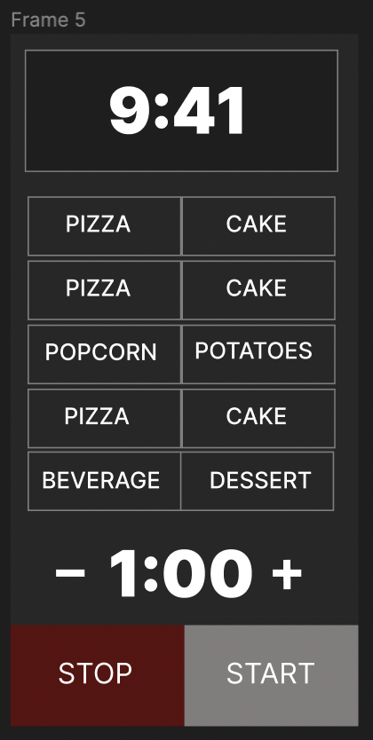
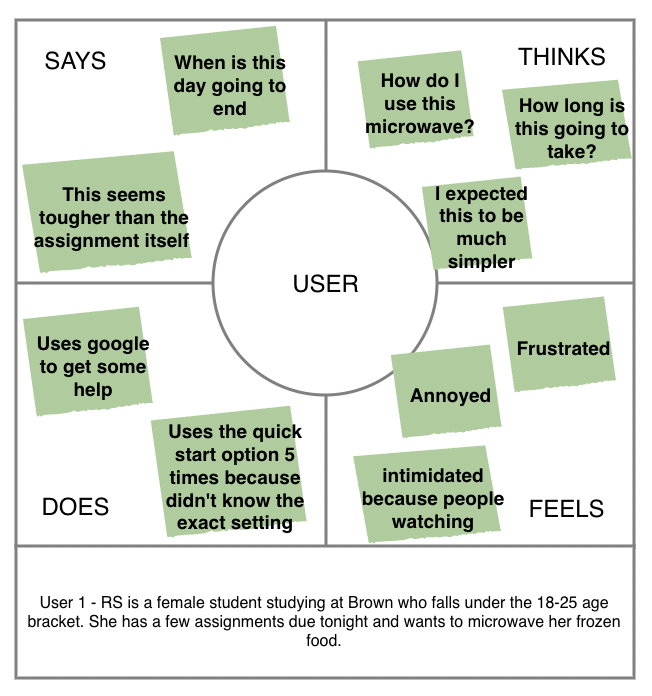
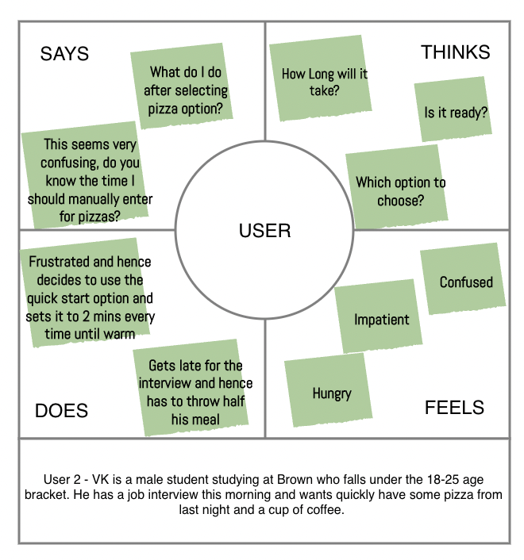
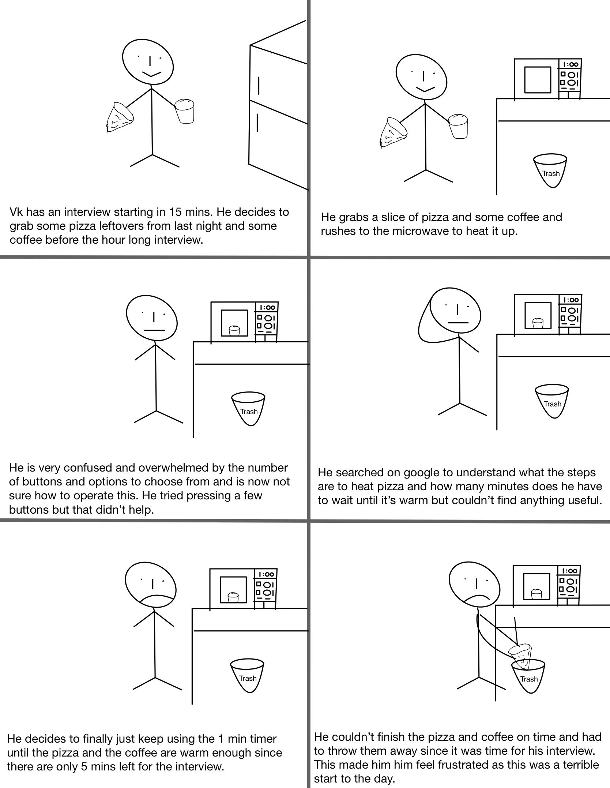
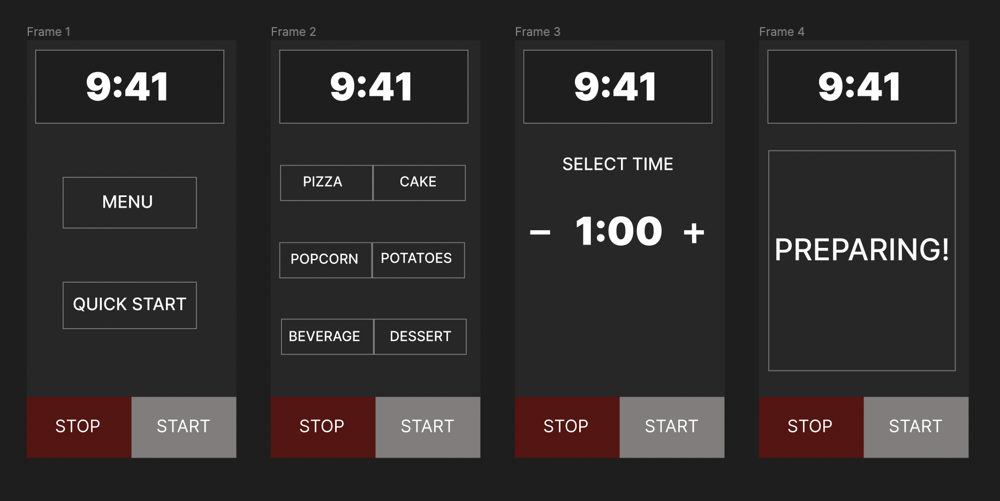

Overview
Microwave is something that an individual uses almost everyday. However, most of the the microwave interfaces
are overwhelming because of the number of functions offered. I decided to interview and observe real users
interacting with microwave interfaces, create personas based on these users,
illustrate a storyboard for one of the personas and finally redesign the interface.
This is a rough prototype of how existing interfaces look like:

This is a microwave interface. The top section is the timer which by default shows the current
time and changes as we start using the different functionalities of the microwave.
After that are a bunch of menu options that we can choose from. And finally, we have the quick
start option where the user can manually set the timer as per requirement. This is followed by
two buttons, one to start the operation and the other to end the operation. In the image above,
there are a smaller range of buttons and options shown than it is traditionally found. Users
typically feel overwhelmed with the amount of options presented and lack of instructions and
hence most people simply opt for the quick start option.
Recording User Interactions
Some of the questions that I decided to ask were as follows:
- Do you mostly use microwave at work or at home?
- Which age group do you fall under?
- How many times a week do you use microwave?
- Which microwave setting do you use mostly?
- Have you tried using all the functionalities of your microwave at least once?
- Do you find the interface overwhelming?
- On a scale of 10, how easy is it to use and operate all the functions of your microwave?
From my observations and responses I recived, it seems like users have generally avoided
using the existing menu options found in microwaves due to their intricate layout.
Users hence just use the quick start timer option mostly and set the time manually by searching
online to prepare food. Users overall agreed that the current interface isn’t the most user-friendly
interface and would like a simpler version.
I next created two personas by creating a four-quadrant empathy map, describing what users think,
feel, say, and do using the data I collected from my observations and interviews.


Now I decided to create a
storyboard for one of my persona’s user journey from start to end.
This storyboard reflects the goals of my persona and includes all
necessary steps for using an interface.

Redesigned Microwave Interface

The existing interfaces on most microwaves are very overwhelming and often users do not
know how to operate maximum functions of such microwaves. The redesigned version gets rid
of all these buttons that are usually found. Instead there are two options for the user to
choose from. If the user selects ‘menu’, then frame 2 pops up with all the functionalities
to choose from after which it takes the user to frame three where the required settings are
already loaded, and the user just has to press the start button. If the user opts for quick
start from frame 1, then the user is directly taken to frame 3 where the user can adjust the
time manually and then start.